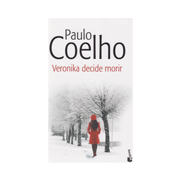
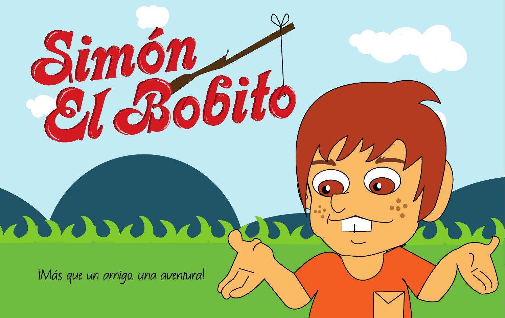

Veronica decide morir
Autor: PAULO COELHO
Narra la experiencia de una joven nacida en Eslovenia de 24 años que parece tenerlo todo. Cada segundo de nuestra existencia optamos entre la alternativa de seguir adelante o de abandonar. Cada segundo de nuestra existencia optamos entre la alternativa de seguir adelante o de abandonar. Veronika es una joven completamente normal. Es guapa, no le faltan pretendientes y tiene un buen trabajo. Su vida transcurre sin mayores sobresaltos, sin grandes alegrías ni grandes tristezas. Pero no es feliz. Por eso, una mañana de noviembre, Veronika decide acabar con su vida. Sueños y fantasías. Deseo y muerte. Locura y pasión. En el camino hacia la muerte, Veronika experimenta placeres nuevos y halla un nuevo sentido a la vida, un sentido que le había permanecido oculto hasta ahora, cuando tal vez sea demasiado tarde par echarse atrás. Veronika decide morir plantea que cada segundo de nuestra existencia optamos entre la alternativa de seguir adelante o de abandonar.
Un Viaje magico

Autor: Vegetta777 y Willyrex
Para Willy y Vegetta, una invasión zombi que fulmina el sitio en el que vives es solo el principio de una gran aventura. Viajes a las profundidades, intensos duelos al amanecer, misteriosas brujas y temibles gigantes...
Para salvar a sus amigos y devolver su pueblo a la normalidad, la pareja más intrépida de YouTube se enfrentará a todos los peligros, acompañados por sus divertidas mascotas, Trotuman y Vakypandy. ¡Y por ti, que podrás dejar tu firma en sus aventuras a golpe de lápiz!
Simon el bobito
Autor: Rafael Pombo
Dentro de los cuentos infantiles latinoamericanos, se conoce con el nombre de Simón, el bobito, a una historia infantil, escrita por el célebre narrador José Rafael Pombo, la cual se compone de varios versos en donde se narran las desventuras de un chico distraído, quien sufre sus errores sin que nadie venga a su ayuda.